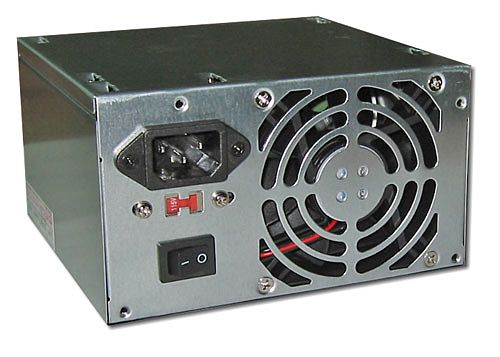
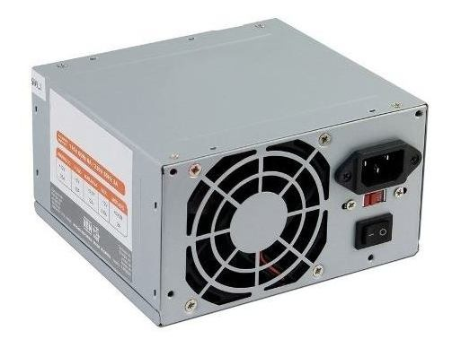

La Fuente de poder

Es un componente el cual se encarga de transformar la corriente alterna en corriente continua, transmitiendo la corriente eléctrica imprescindible y necesaria a los ordenadores para el buen funcionamiento y protección de estos.
⠀
Historia: se puede decir que nacieron junto al desarrollo de la radio, durante la primera cuarta parte del siglo xix. para entonces ya la red de distribución entregaba corriente alterna (fue westinghouse que impulsó la corriente alterna, frente a la continua preconizada por edison) que hace muy fácil el cambio de la tensión, con la ayuda de los llamados transformadores. es casi imposible saber quién y cuándo se construyeron las primeras. posiblemente serían ingenieros adscritos a alguna compañía eléctrica pionera, lo que sí es seguro que utilizaba válvulas electrónicas (lámparas o tubos), por la sencilla razón de que los transistores no existían todavía. tan pronto éstos fueron desarrollados, se les utilizó con ventaja en las fuentes.⠀
Existen 2 tipos de funtes de poder y son la AT y ATX.⠀
Fuente de poder AT: AT son las siglas de ("Advanced Technology") ó tecnología avanzada, que se refiere a una nuevo estándar de dispositivos introducidos al mercado a inicios de los años 80´s que reemplazo a una tecnología denominada XT ("eXtended Technology") ó tecnología extendida.⠀
La fuente AT actualmente está en desuso y fue sustituida por la tecnología de fuentes de alimentación ATX.⠀
Caracteristicas:⠀
Encendido mecánico.⠀
Algunas cuentan con un conector de tres terminales.⠀
Es una fuente ahorradora.⠀
Es segura ya que al encenderse se interrumpe la electricidad.⠀
⠀
Fuente de poder ATX: ATX son las siglas de ("Advanced Technology eXtended") ó tecnología avanzada extendida, que es la segunda generación de fuentes de alimentación introducidas al mercado para computadoras con microprocesador Intel® Pentium MMX.⠀
La fuente ATX es un dispositivo que se monta internamente en el gabinete de la computadora , la cuál se encarga básicamente de transformar la corriente alterna de la línea eléctrica comercial en corriente directa; la cuál es utilizada por los elementos electrónicos y eléctricos de la computadora.⠀
Encendido digital.⠀
Caracteristicas⠀
Algunas tienen un interruptor trasero.⠀
El apagado puede ser operado directamente de el software.⠀
Se integra desde microprocesadores Intel MMX hasta los mas modernos.⠀
⠀
Partes de la fuente de poder:⠀
1.- Ventilador: expulsa el aire caliente del interior de la fuente y del gabinete, para mantener frescos los circuitos.⠀
2.- Interruptor de seguridad: permite encender la fuente de manera mecánica.⠀
3.- Conector de alimentación: recibe el cable de corriente desde el enchufe doméstico.⠀
4.- Selector de voltaje: permite seleccionar el voltaje americano de 127V ó el europeo de 240V.⠀
5.- Conector SATA: utilizado para alimentar los discos duros y las unidades ópticas tipos SATA.⠀
6.- Conector de 4 terminales: utilizado para alimentar de manera directa al microprocesador.⠀
7.- Conector ATX: alimenta de electricidad a la tarjeta principal.⠀
8.- Conector de 4 terminales IDE: utilizado para alimentar los discos duros y las unidades ópticas.⠀
9.- Conector de 4 terminales FD: alimenta las disqueteras.⠀